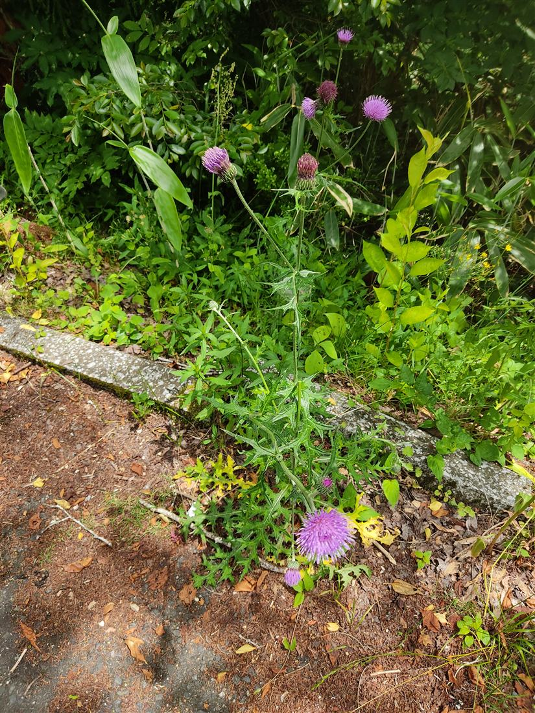
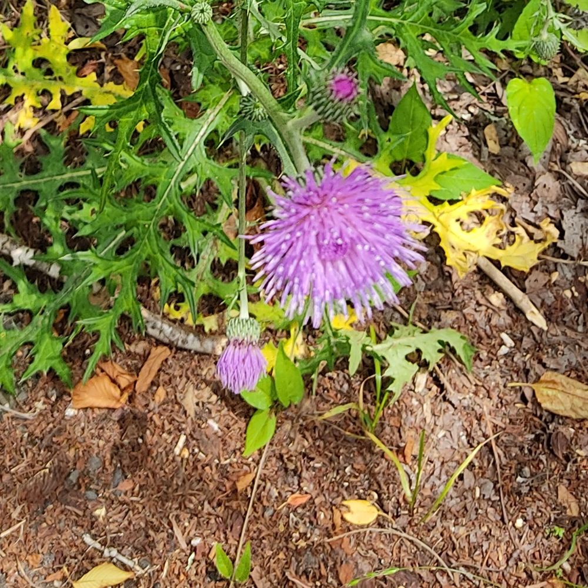

地図を読み込んでいるよ…
🔍 写真も地図も、押しているあいだ拡大して見られるよ（スマホは指を置いてすこし待ってね）。
🌍 の地図＝この子がもともと自生している場所を緑に。日本の在来種（本州〜九州の野原・道ばた・土手）。朝鮮半島・中国東部にも近い仲間が分布。
⭐日本の在来種——本州〜九州の野原・道ばた・土手に自生する。朝鮮半島にも近い仲間。⭐だから今回は「日本」を塗っている——ここまでの外来の園芸植物とちがって、この子は日本もふるさとだからだよ（広島の道ばたで咲いていた）。⚠地図は都道府県まで塗れるけど、実際は各地の平地〜低山にふつうに生える。
⚠ 地図は国（日本と中国だけ県・省）までしか塗れないから、ほんとうの分布より広く見えていることがあるよ。地図はだいたいの場所。正確なところは、上の文を見てね。
ノアザミ
Cirsium japonicum
別名 · アザミ（代表種）／英名 Japanese thistle／ 原産 · 日本の在来種（本州〜九州）／ 見どころ · ⭐春から咲く数少ないアザミ
キク科 · Asteraceae（アザミ属 Cirsium）── 図鑑で初めてのアザミ属
暫定同定ノアザミ（Cirsium japonicum）⚠2022.05.28・広島＝春咲きでほぼ確定。総苞の粘り未確認・ヒレアザミとの区別は要確認のため“暫定”
名前と学名の由来
- ⭐属名 Cirsium（キルシウム）は、ギリシャ語 kirsos（静脈の腫れ・静脈瘤）から。──古くアザミの類が、その症状の手当てに使われたことにちなむという（諸説あり）。
- 種小名 japonicum は「日本の」。──日本を代表するアザミ、という名前だね。
- 和名「アザミ」の語源は諸説。「花に触れると刺で“あざむかれる（傷つけられる）”から」という説がよく知られるけれど、はっきりとは分かっていない。「野に咲くアザミ」だから「ノアザミ」。
この植物のこと
- キク科アザミ属の多年草。図鑑で初めてのアザミ属だよ。日本の在来種で、野原・道ばた・土手にふつうに生える。
- ⭐⭐日本の野生アザミでは、めずらしく“春から初夏”に咲く（花期5〜8月）。ほかの多くのアザミは秋咲きだから、「春〜初夏に咲いていた」だけで、ノアザミがぐっと有力になる（この子も5月末）。
- ⭐紫の“花”は、じつは小さな筒状花のあつまり（キク科だからね）。花びらに見える細い一本いっぽんが、筒状の小花。虫（ハチ・チョウ）が好む、いい蜜源だよ。
- ⭐総苞（そうほう）＝花のつけ根の“うろこ状の包み”。ノアザミの総苞は触るとやや粘るのが特徴（この写真では確認できていない＝宿題）。
- 葉は深く羽状に切れ込み、ふちに鋭い刺。うっかり触ると痛いので、観察はそっとね。
- 若い葉・茎や根は山菜にもなる（アザミ類。刺を除いて調理）。ミツバチが集めるアザミの蜜は、香りのよい蜜としても知られる。
⭐ コラム ── アザミの見分け方（燻太さんの質問）
- 日本のアザミは150種以上あって、上級者でも難しい。でも、初心者でも効く“優先順位”があるよ。
- ⭐① まず「季節（花期）」＝最強のふるい。春〜初夏に咲く野生アザミは、ほぼノアザミ一択（他の大半は秋咲き）。「いつ咲いてた？」で候補が激減する。
- ⭐② 総苞が“粘る”か。ノアザミの総苞は触るとベタつく（決め手級）。秋咲きのアザミはふつう粘らない。
- ③ 花の向き・総苞の反り返り。ノアザミは頭花が上向き、総苞は苞片が圧着ぎみ。下向きに垂れる／苞片が強く反り返る種もあり、そこが識別点。
- ④ 葉と根生葉：切れ込みの深さ・刺の強さ／花のとき根生葉が残るか／葉の基部が茎を抱くか。
- ⑤ 地域：多くが地域固有なので、撮影地が分かると絞れる。
- 📌つまり「切れ込み・花の付き方・総苞の反り返り」＋「季節」＋「総苞の粘り」。燻太さんの着眼（切れ込み・花の付き方・反り返り）は全部“正解の観点”だよ。
同定について ── 暫定（ノアザミ）
- なぜ「ノアザミ」：2022年5月28日・広島＝春〜初夏咲き（＝ノアザミがほぼ確定に近い）＋頭花が上向き＋深く切れ込む刺のある葉。整合的。
- ⚠なぜ「暫定」：アザミは一枚の古い写真で言い切るのは危険。総苞が粘るかを確認できていないし、葉の切れ込みがかなり深いので、近縁種の可能性を完全には消せない。だから正直に「暫定」にしておく。
- 唯一の対抗馬＝ヒレアザミ（別属 Carduus）：これも初夏の道ばたに咲くけれど、茎に沿って刺のある“翼（ヒレ）”が続くのが目印。⭐この写真の茎にははっきりした翼が見えないので、ノアザミ側に寄せた。おまけに入れたから、見つけたら茎のヒレでくらべよう。
参考：三河の植物観察「ノアザミ」（Cirsium japonicum・キク科アザミ属・日本在来／花期5〜8月と春から咲く／総苞は粘る／頭花は上向き）／Wikipedia「ノアザミ」（春〜夏咲きは日本のアザミでは例外的／総苞が粘る／属名はギリシャ語 kirsos に由来）